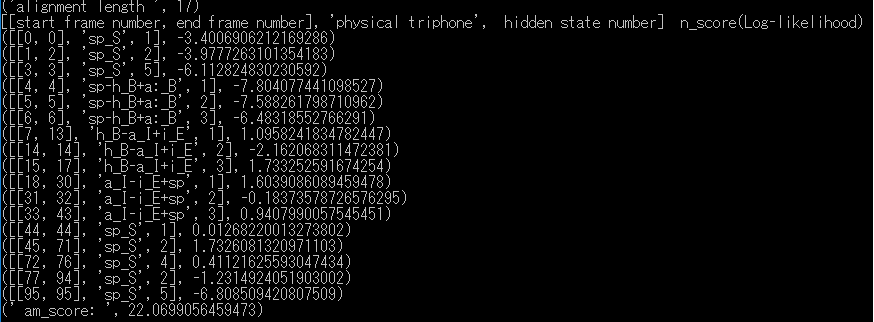
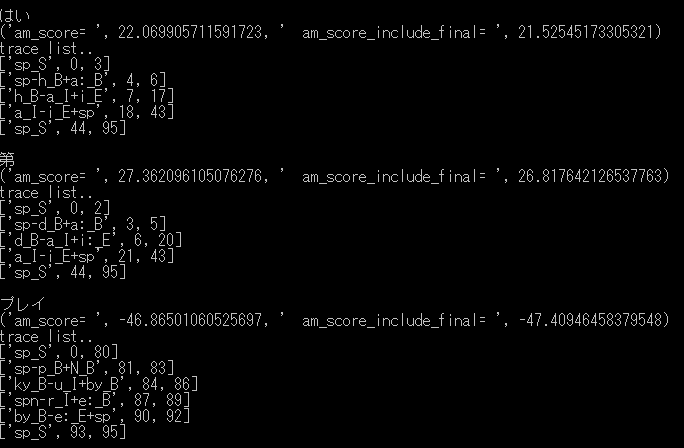

音声認識エンジンJuliusのディクテーションキットに含まれるDNN-HMMモデルを利用して対数尤度を計算するpythonを作ってみた。
Juliusのディクテーションキットversion 4.4を下記よりダウンロードする。
http://julius.osdn.jp/index.php?q=dictation-kit.html
model/以下を展開する。
read_binhmm.py Juliusのディクテーションキットversion 4.4のDNN-HMM音響モデルを読み込み,HMMモデル,遷移行列,Triphoneとの対応を出力するクラス。
calcu_likelihood.py 既知の、TriphoneとそのHMMの状態の時系列から対数尤度を計算するクラス。
python calcu_likelihood.py
下記は対数尤度の計算例です。

Juliusの設定で -salign （認識結果のHMM状態ごとのアラインメント結果を出力） を利用して TriphoneとそのHMMの状態の時系列を得ることができます。
calcu_max_likelihood.py Triphoneの時系列から最大対数尤度を計算するクラス。
python calcu_max_likelihood.py
下記は最大対数尤度の計算例です。

DNNの出力のサンプルの、「はい」「第」「プレイ」の３個のTriphoneの時系列についての最大対数尤度（am_score=値）を計算しています。
「第」は27.36と高いのですが、Juliusの認識結果は最終的には22.069の単独音の「はい。」と判定されました。実際の発話の「プレイ」は、発話区間が無音(sp_S)にアサインされ、-46.86と低い値になっています。
以下のデータは、Juliusディクテーションキットversion 4.4に含まれるデータを利用して作成しています。
hmm_model_data0.npy Juliusのディクテーションキットversion 4.4のDNN-HMM音響モデルから作ったHMMモデル(DNNの出力へのインデックス）
transition_matrix_data0.npy Juliusのディクテーションキットversion 4.4のDNN-HMM音響モデルから作った遷移行列
dictionary_hmm_trans_hiddenstatenum0.json Juliusのディクテーションキットversion 4.4のDNN-HMM音響モデルから作った上記とTriphoneとの対応
python read_binhmm.py
で作成できます。
PLAY-16.wav 音声波形のサンプル。認識結果は「はい。」になっているが、実際には「プレー」と発話している。最後尾の音は処理区間の都合上無視されている。
dnn_output_sample0.npy DNNの出力のサンプル。 Juliusディクテーションキットversion 4.4のDNN(dnnclient)版を利用してDNN出力を取り出したもの。
DNNの出力の求め方については Wave-DNN を参照してください。
以下のライセンス文を参照のこと。